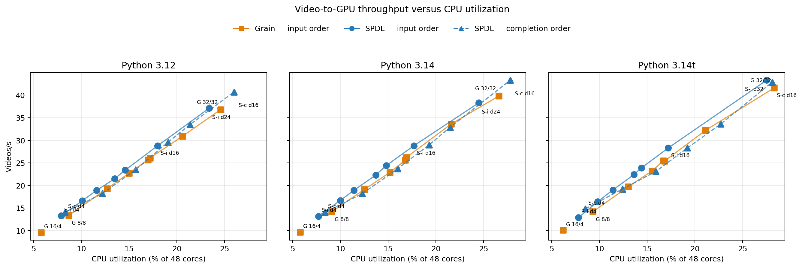
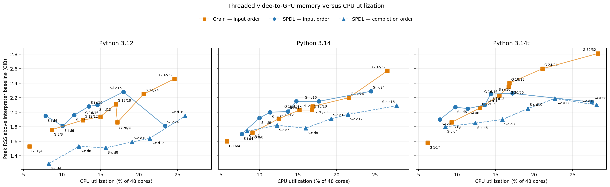

Migrating from Grain¶
Grain and SPDL can both construct concurrent
input pipelines, but they expose different abstractions. Grain is dataset-first:
it preserves lazy random access through grain.MapDataset and later
turns the dataset into an iterator. SPDL is stage-first: it connects a source,
independently scheduled operations, bounded queues, and a sink.
Migration is therefore a pipeline redesign, not an import replacement. SPDL is a strong fit when the workload benefits from stage-specific concurrency or async I/O. Its task and queue statistics provide the structured feedback needed for manual tuning and agentic performance optimization. Features without a built-in equivalent require an application-level adapter during migration.
Why SPDL uses a stage-first pipeline¶
A production input pipeline often combines remote network reads, CPU decoding or preprocessing, host-to-device transfer, accelerator computation, and device-to-host transfer. These operations are limited by different resources, so one concurrency setting is rarely appropriate for the entire pipeline.
For example, a remote read spends much of its lifetime waiting rather than using a CPU and can often benefit from substantially more concurrency than a CPU-bound transform. CPU work should keep the available cores busy, but unbounded workers can delay the training loop through CPU contention and the noisy-neighbour effect. Device transfers have a different constraint again: accelerator copy engines commonly allow one host-to-device and one device-to-host transfer to overlap with computation, so transfer stages are usually kept at low concurrency and scheduled independently in each direction.
SPDL represents these resource boundaries as pipeline stages. Each stage can select its own execution model, concurrency, output ordering, and bounded queue, which makes the scheduling policy correspond directly to the production data path. A dataset abstraction is familiar and convenient for expressing samples and transformations, but packaging heterogeneous work behind one dataset iterator makes independent concurrency, buffering, and backpressure harder to observe and tune.
This structure also makes the main performance knobs direct and local. For
example, pipe(fetch, concurrency=32) controls network concurrency while
pipe(decode, concurrency=8) independently controls CPU decode concurrency;
the worker-pool size and sink buffer are separate settings. Grain exposes
effective iterator-level controls through ReadOptions and
MultiprocessingOptions, but those controls govern the worker layer around a
sequence of transforms rather than one named operation. The SPDL stage model
therefore makes it more intuitive to change one resource constraint at a time
and attribute the measured result to that change.
SPDL also records per-stage task time, throughput, queue wait time, and queue occupancy. These measurements expose the current bottleneck and the effect of a configuration change. Besides supporting manual tuning, the structured feedback can drive an agentic optimization loop that measures the pipeline, changes one stage’s concurrency or buffering, and validates the end-to-end result. See the SPDL optimization guide and its performance-statistics reference.
How Grain is commonly used¶
Grain has two APIs:
grain.DataLoadercombines a random-access data source, sampler, flat operation list, worker pool, and output buffer.The Dataset API chains
grain.MapDatasetandgrain.IterDatasettransformations. It preserves random access as long as possible, then adds threaded reads, prefetching, or multiprocessing when converted to an iterable dataset.
In large training codebases, the Dataset API is the more common integration shape. Representative pipelines use it to:
wrap custom file, record, Hive, or in-memory random-access sources;
seed, globally shuffle, repeat, and shard a dataset;
map tokenization, decoding, augmentation, and collation functions;
filter invalid examples and batch or pack variable-length examples;
mix multiple datasets with weights;
prefetch with
grain.ReadOptionsand run transforms withgrain.MultiprocessingOptions; andsave and restore
grain.DatasetIteratoror elastic-iterator state with a training checkpoint.
Grain does have multithreading: ReadOptions(num_threads=N) concurrently
reads and applies MapDataset transformations with a
concurrent.futures.ThreadPoolExecutor while returning elements in input
order. Without mp_prefetch, that pool runs in the main process and no worker
process is created. When mp_prefetch wraps the iterator, ReadOptions
instead configures each worker process. Grain’s Dataset API does not expose an
equivalent completion-order switch.
Equivalent pipeline structure¶
The following single-rank example applies the same source lookup, transform, ordering, and fixed-size batching contract in each library. A typical Grain pipeline separates the random-access graph from iteration:
import grain.python as grain
dataset = (
grain.MapDataset.source(source)
.seed(seed)
.shuffle()
.map(transform)
.to_iter_dataset(grain.ReadOptions(num_threads=8))
.batch(batch_size, drop_remainder=True)
)
for batch in dataset:
train_step(batch)
The corresponding SPDL pipeline makes the execution stages explicit:
from spdl.pipeline import PipelineBuilder
from spdl.source import DistributedRandomSampler
from spdl.source.utils import embed_shuffle
sampler = embed_shuffle(
DistributedRandomSampler(
len(source), rank=0, world_size=1, seed=seed
)
)
pipeline = (
PipelineBuilder()
.add_source(sampler)
.pipe(source, concurrency=8, output_order="input")
.pipe(transform, concurrency=4, output_order="input")
.aggregate(batch_size, drop_last=True)
.pipe(collate, concurrency=1)
.add_sink(4)
.build(num_threads=12)
)
for batch in pipeline:
train_step(batch)
Both versions emit fixed-size batches without reordering after sampling. A distributed migration must additionally match the application’s exact sharding and shuffle contract. The SPDL form makes lookup and transform scheduling independent, so each stage can be tuned for its own resource constraint. Collation is serial here because the example assumes it is inexpensive; give it separate measured concurrency when it performs substantial CPU work.
Component mapping¶
Grain |
SPDL |
Migration note |
|---|---|---|
|
An index iterable plus |
Yield records directly if random access is unnecessary. Yield indices and pass the random-access source to a pipe when lookup needs concurrency. |
|
|
Match rank, world size, draw count, seed, and drop behavior before tuning. |
|
SPDL is streaming and does not preserve a random-access dataset view. |
|
|
Give I/O, decode, tokenization, collation, and transfer separate stages. |
|
|
A source or |
Derive the RNG from the global seed, epoch, rank, and stable sample identity instead of sharing mutable global state. |
|
A |
Measure rejection rates; filtering changes downstream batch boundaries. |
|
A generator operation, or |
Preserve ordering explicitly if downstream logic depends on it. |
|
|
Match |
|
|
Decide where epoch boundaries and reshuffling occur. |
|
A random sampler, optionally wrapped by
|
This covers index shuffling, not arbitrary streaming-buffer shuffle. |
|
Per-stage |
SPDL makes scheduling and buffer choices explicit for each stage. |
|
|
Put only GIL-holding work across a process boundary; serialization can erase the gain. |
|
Application composition of iterables or maps |
|
Dataset statistics and profiling |
Pipeline task statistics, queue statistics, custom
|
Stage boundaries expose bottlenecks and backpressure. Task hooks can add per-sample pre/post-processing and measurements. |
Migration work for non-equivalent features¶
As of SPDL 0.7.0, implement and validate the following behaviors in application
code. These sketches show the relevant builder fragment and omit the common
add_sink(...).build(...) suffix, application-specific failure handling, and
checkpoint storage.
Checkpointable iterator state and elastic resume. SPDL does not provide a general
DatasetIterator.get_state/set_stateequivalent. Persist the source epoch and committed source offset, then reconstruct the sampler on resume. Track consumed source positions directly because filtering can break the relationship between batch count and source position:from itertools import islice state = {"epoch": epoch, "source_offset": committed_source_offset} save_with_training_checkpoint(state) def make_sampler(epoch): return DistributedRandomSampler( len(source), rank=rank, world_size=world_size, seed=base_seed + epoch, ) class ResumedEpoch: def __iter__(self): sampler = make_sampler(epoch=state["epoch"]) return islice(iter(sampler), state["source_offset"], None) builder = PipelineBuilder().add_source(ResumedEpoch())
Rebuild the source with offset zero when advancing to the next epoch. The epoch-to-seed mapping is part of the checkpoint contract and must be identical before and after resume.
Lazy random access after transformations. A running SPDL pipeline is an iterator, not an indexable dataset. Keep a separate transformed view when indexed debugging or evaluation requires one:
class TransformedView: def __len__(self): return len(source) def __getitem__(self, index): return transform(source[index]) debug_view = TransformedView() builder = ( PipelineBuilder() .add_source(range(len(debug_view))) .pipe(debug_view.__getitem__, concurrency=8, output_order="input") )
Random-access and checkpointable mixture state. Compose application iterables or maps according to the required semantics.
MergeIteratoris one ready-made weighted iterable, but it does not preserve GrainMapDataset.mixrandom access or expose its RNG and parent iterator states:from itertools import chain from spdl.source.utils import MergeIterator class Concatenated: def __iter__(self): return chain(source_a, source_b) concatenated_builder = PipelineBuilder().add_source(Concatenated()) weighted = MergeIterator( [source_a, source_b], weights=[0.8, 0.2], stop_after=epoch_size, seed=epoch_seed, ) weighted_builder = PipelineBuilder().add_source(weighted)
Automatic per-record random keys. Inject an RNG in the source or a pipe stage, derived from stable record metadata. A shared mutable global RNG is unsafe when a stage has concurrency greater than one:
import hashlib import random def load_with_rng(index): identity = f"{global_seed}:{epoch}:{rank}:{index}".encode() seed = int.from_bytes( hashlib.blake2b(identity, digest_size=8).digest(), byteorder="big" ) return source[index], random.Random(seed) def random_transform(item): sample, rng = item return augment(sample, rng) builder = ( PipelineBuilder() .add_source(sampler) .pipe(load_with_rng, concurrency=16) .pipe(random_transform, concurrency=8) )
Drop-in elastic global batching. Global batch size, worker topology, resharding, and resume behavior must be expressed by the application:
if global_batch_size % world_size: raise ValueError("global batch size must be divisible by world size") rank_batch_size = global_batch_size // world_size sampler = DistributedRandomSampler( len(source), rank=rank, world_size=world_size, ddp_drop_last_distributed_round=True, ) builder = ( PipelineBuilder() .add_source(sampler) .pipe(source, concurrency=8) .aggregate(rank_batch_size, drop_last=True) )
Keeping distributed-round dropping enabled gives every rank the same source length.
drop_last=Truethen removes an incomplete per-rank batch, so all ranks emit the same number of batches. Change either policy only when the application explicitly synchronizes uneven ranks.Dataset transformation introspection. SPDL reports runtime stage behavior, and a custom
TaskHookcan capture per-sample inputs, timing, or failure metadata. It does not reproduce Grain’s index-level dataset debugging model:from contextlib import asynccontextmanager from time import perf_counter from spdl.pipeline import TaskHook, TaskStatsHook class SampleTiming(TaskHook): @asynccontextmanager async def task_hook(self, input_item=None): started = perf_counter() try: yield finally: record_latency(input_item, perf_counter() - started) def hook_factory(stage): hooks = [TaskStatsHook(stage)] if stage.stage_name == "decode": hooks.append(SampleTiming()) return hooks pipeline = ( PipelineBuilder() .add_source(source) .pipe(decode, concurrency=8, name="decode") .add_sink(4) .build( num_threads=24, task_hook_factory=hook_factory, ) )
Packing is not a fundamental gap: implement token- or byte-budget packing with
a custom spdl.pipeline.defs.Aggregator. Multiprocessing is also not a
gap, but SPDL asks you to choose the process boundary instead of applying one
worker setting to the whole dataset.
Migration workflow¶
Write down the semantic contract. Record the exact sample order, epoch length, sharding, shuffle seed, filtering, batch/drop behavior, random augmentation, mixture weights, and checkpoint/resume guarantees.
Create a parity test. Compare stable sample identifiers and batch shapes over multiple epochs and ranks. Test restart from a mid-epoch checkpoint if the Grain pipeline supports it.
Move sampling into the source. Start with the matching SPDL distributed sampler. Feed its indices to
pipe(source)for automatic__getitem__lookup, or make the source yield records directly.Split work by resource. Use separate stages for remote read, decode, tokenization or augmentation, collation, and device transfer. This is the change that enables SPDL’s stage-level optimization.
Choose execution per stage. Prefer async functions for async I/O and threads for native operators that release the GIL. For measured GIL-holding work, use
pipe(..., executor=ProcessPoolExecutor(...), output_order="input")when order is required. A multi-stageto(ProcessPoolExecutorConfig(...))region instead emits in completion order, requires application-level reordering, and must be closed withto(MAIN_PROCESS)before adding the sink.Batch late enough to expose parallelism. Aggregate records, then collate once. For variable-length data, use a custom aggregator and test its final flush and
drop_lastbehavior.Bound every queue. Start with small sink and inter-stage buffers. Large prefetch values can hide a bottleneck while increasing host memory and checkpoint replay distance.
Tune from measurements. Inspect queue occupancy and per-stage task time, then change one stage’s concurrency at a time. Optimize end-to-end training step time, not loader microbenchmark throughput alone.
Roll out with measured gates. Compare output fingerprints, recovery behavior, and training metrics while moving traffic to the SPDL path.
Benchmark the replacement¶
We benchmarked an end-to-end video-loading task that reads encoded videos from remote storage, demuxes and decodes two-second clips on CPU, collates batches, and copies tensors to a GPU on a dedicated CUDA stream. The task was implemented with Grain and SPDL and run with threading and multiprocessing configurations across Python 3.12, 3.14, and free-threaded 3.14. The following plot shows the relationship between CPU utilization and video throughput.
The libraries expose different scaling controls. Grain configures worker threads and prefetch for the composed dataset, while SPDL configures concurrency for individual pipeline stages. Worker counts are therefore not directly comparable, so the plots use measured CPU utilization as the common resource axis. Grain preserves input order. SPDL threading was measured with both input and completion order; process-region measurements remain in the table for reference.
{kind=link}

CPU utilization versus video throughput. Squares are Grain with input order, circles are SPDL with input order, and dashed triangles are SPDL with completion order. Process measurements remain in the table below.¶
The two solid input-order series are the direct migration comparison. At roughly matched CPU utilization, Grain with 16 threads and prefetch 16 processed 22.7 videos/s using 7.21 CPU cores on Python 3.12, while SPDL with twelve decode workers processed 23.4 videos/s using 6.99 cores. The corresponding results were 22.9 videos/s at 7.29 cores for Grain versus 24.4 at 7.10 for SPDL on Python 3.14, and 23.2 at 7.42 versus 23.9 at 6.92 on Python 3.14t. Across the sweep, SPDL generally delivered more throughput for the same measured CPU budget. In this workload, the result indicates that SPDL’s stage-wise orchestration uses CPU more efficiently. As the memory plot below shows, that gain came with a small host-memory premium: 0.02–0.16 GiB at the matched points.
Input order holds a completed item until every preceding item is ready. Completion order emits each item as soon as it finishes, avoiding that head-of-line wait but changing observable ordering. At the same 16-worker decode setting, completion order reached 40.7–43.3 videos/s using 12.47–13.49 cores, compared with 28.3–28.8 videos/s using 8.28–8.65 cores for input order. The completion-order series demonstrates the additional throughput available when the application does not require Grain-equivalent ordering; it is not the apples-to-apples migration result.
The SPDL sweep illustrates stage-local tuning: after identifying decode as the CPU-bound stage, only decode concurrency changes. Increasing decode concurrency to 24 reached 37.1 videos/s using 11.24 CPU cores on Python 3.12 and 38.3 using 11.77 cores on Python 3.14. Python 3.14t reached 43.3 videos/s using 13.21 cores with 32 workers. These results demonstrate the tuning mechanism for this workload rather than a universal concurrency setting.
Benchmark setup¶
The measured workload reads 128 videos in four-record bulks, decodes eight
224-by-224 RGB frames per video, batches eight videos, discards one warmup, and
performs three measured runs. The reported Grain results use Grain 0.2.16.
That release does not provide free-threaded cp314t builds of its native
ArrayRecord and index-shuffle modules. The 3.14t experiment packages Grain’s
Python sources and replaces imports of those two unused modules with stubs; the
measured pipeline does not call either feature.
Stripped of storage-specific types and names, the Grain implementation has this
shape. BulkVideoSource performs the remote read, and ExpandBulk turns
each returned bulk into individual encoded-video records:
grain_dataset = (
grain.MapDataset.source(BulkVideoSource(...))
.apply(ExpandBulk(max_fan_out=bulk_size))
.map(demux_video)
.map(decode_video)
.to_iter_dataset(
grain.ReadOptions(
num_threads=grain_workers,
prefetch_buffer_size=grain_prefetch,
)
)
.batch(batch_size, drop_remainder=False)
)
for batch in grain_dataset:
consume(transfer_to_gpu(collate(batch)))
The equivalent SPDL implementation exposes each operation as a separately
tunable stage. gpu_transfer_executor is a dedicated one-thread executor so
the copy uses its own CUDA stream:
pipeline = (
PipelineBuilder()
.add_source(range(len(bulk_video_source)))
.pipe(
bulk_video_source,
concurrency=fetch_workers,
output_order=output_order,
)
.disaggregate()
.pipe(demux_video, concurrency=demux_workers, output_order=output_order)
.pipe(decode_video, concurrency=decode_workers, output_order=output_order)
.aggregate(batch_size, drop_last=False)
.pipe(collate)
.pipe(
transfer_to_gpu,
concurrency=1,
executor=gpu_transfer_executor,
)
.add_sink(prefetch)
.build(num_threads=spdl_threads)
)
for batch in pipeline:
consume(batch)
The baseline Grain threading configuration sets
ReadOptions(num_threads=16, prefetch_buffer_size=4). Its multiprocessing
configuration disables those two controls and instead sets
MultiprocessingOptions(num_workers=8, per_worker_buffer_size=4). The SPDL
threading configuration sets fetch, demux, decode, and H2D concurrency to four,
three, eight, and one respectively, uses a 40-thread shared pool, and holds four
batches at the sink. Its process configuration puts fetch through decode in an
eight-worker process region while keeping H2D transfer in the main process.
That region sends decoded frame arrays back to the main process for collation;
the resulting inter-process communication makes this pipeline unsuited to
multiprocessing.
CPU usage and throughput cover the same end-to-end interval, including pipeline setup and shutdown, aggregated over the measured runs. The RSS baseline is captured in the spawned benchmark interpreter after module imports and before pipeline construction or warmup. Peak RSS is the sampled aggregate process-tree resident memory during warmup and measured runs; the reported delta subtracts that baseline. Process-mode deltas therefore include the additional worker interpreters. The benchmark host exposed 48 CPU cores and about 1.5 TiB of host memory.
These configurations are starting points for the two libraries, not a claim
that their worker counts or CPU consumption are equivalent. In particular,
Grain’s prefetch_buffer_size limits how many read threads can make progress.
Raising num_threads while leaving the prefetch depth at four did not raise
CPU utilization in this workload, so the Grain sweep changes both
num_threads and prefetch_buffer_size together.
A preliminary Python 3.14 fetch-stage sweep found that raising SPDL fetch
concurrency from four to 32 left throughput at 23.3 videos/s while increasing
incremental peak RSS from 1.34 to 1.80 GiB; one fetch worker reduced throughput
to 18.0 videos/s. The main matrix therefore uses four fetch workers. The SPDL
decode sweep keeps fetch, demux, H2D transfer, pool size, and sink size fixed and
changes only the decode stage’s concurrency. This illustrates how the stage
model exposes a direct tuning knob once a bottleneck is identified.
Python |
Library |
Execution |
Order |
Concurrency |
Videos/s |
CPU cores (host %) |
RSS baseline → peak; Δ GiB (host %) |
CUDA MiB |
|---|---|---|---|---|---|---|---|---|
3.12 |
Grain |
Threads |
Input |
threads=16; prefetch=4 |
9.6 |
2.79 (5.8%) |
1.40 → 2.93; Δ 1.53 (0.10%) |
40 |
3.12 |
Grain |
Processes |
Input |
processes=8; read threads=0; buffer/worker=4 |
5.2 |
7.22 (15.0%) |
1.41 → 22.80; Δ 21.39 (1.42%) |
40 |
3.12 |
SPDL |
Threads |
Input |
fetch/demux/decode/H2D=4/3/8/1; pool=40; sink=4 |
18.9 |
5.61 (11.7%) |
1.41 → 3.35; Δ 1.95 (0.13%) |
160 |
3.12 |
SPDL |
Threads |
Completion |
fetch/demux/decode/H2D=4/3/8/1; pool=40; sink=4 |
23.4 |
7.66 (16.0%) |
1.40 → 3.36; Δ 1.95 (0.13%) |
160 |
3.12 |
SPDL |
Processes |
Completion |
region=8; H2D=1; main pool=2; sink=4 |
5.7 |
7.75 (16.2%) |
1.41 → 23.20; Δ 21.79 (1.44%) |
160 |
3.14 |
Grain |
Threads |
Input |
threads=16; prefetch=4 |
9.7 |
2.78 (5.8%) |
1.46 → 3.05; Δ 1.60 (0.11%) |
40 |
3.14 |
Grain |
Processes |
Input |
processes=8; read threads=0; buffer/worker=4 |
5.3 |
7.21 (15.0%) |
1.46 → 23.39; Δ 21.93 (1.45%) |
40 |
3.14 |
SPDL |
Threads |
Input |
fetch/demux/decode/H2D=4/3/8/1; pool=40; sink=4 |
19.5 |
5.57 (11.6%) |
1.46 → 3.39; Δ 1.93 (0.13%) |
160 |
3.14 |
SPDL |
Threads |
Completion |
fetch/demux/decode/H2D=4/3/8/1; pool=40; sink=4 |
23.8 |
7.65 (15.9%) |
1.46 → 3.27; Δ 1.81 (0.12%) |
160 |
3.14 |
SPDL |
Processes |
Completion |
region=8; H2D=1; main pool=2; sink=4 |
5.8 |
7.67 (16.0%) |
1.46 → 23.51; Δ 22.06 (1.46%) |
160 |
3.14t |
Grain |
Threads |
Input |
threads=16; prefetch=4 |
10.1 |
2.97 (6.2%) |
1.55 → 3.13; Δ 1.58 (0.10%) |
40 |
3.14t |
Grain |
Processes |
Input |
processes=8; read threads=0; buffer/worker=4 |
14.8 |
4.83 (10.1%) |
1.55 → 3.35; Δ 1.80 (0.12%) |
40 |
3.14t |
SPDL |
Threads |
Input |
fetch/demux/decode/H2D=4/3/8/1; pool=40; sink=4 |
18.2 |
5.42 (11.3%) |
1.55 → 3.45; Δ 1.89 (0.13%) |
160 |
3.14t |
SPDL |
Threads |
Completion |
fetch/demux/decode/H2D=4/3/8/1; pool=40; sink=4 |
23.6 |
7.61 (15.8%) |
1.55 → 3.51; Δ 1.96 (0.13%) |
160 |
3.14t |
SPDL |
Processes |
Completion |
region=8; H2D=1; main pool=2; sink=4 |
5.8 |
7.73 (16.1%) |
1.56 → 24.91; Δ 23.35 (1.55%) |
160 |
The Grain thread sweep produced the following results. The 16-thread rows are different from the first table because this sweep raises prefetch from four to 16, allowing all configured threads to make progress.
Python |
Threads |
Prefetch |
Videos/s |
CPU cores (host %) |
RSS baseline → peak; Δ GiB (host %) |
CUDA MiB |
|---|---|---|---|---|---|---|
3.12 |
8 |
8 |
13.4 |
4.19 (8.7%) |
1.40 → 3.16; Δ 1.76 (0.12%) |
40 |
3.12 |
12 |
12 |
19.3 |
6.11 (12.7%) |
1.41 → 3.30; Δ 1.89 (0.13%) |
40 |
3.12 |
16 |
16 |
22.7 |
7.21 (15.0%) |
1.42 → 3.35; Δ 1.94 (0.13%) |
40 |
3.12 |
18 |
18 |
25.7 |
8.18 (17.0%) |
1.40 → 3.52; Δ 2.11 (0.14%) |
40 |
3.12 |
20 |
20 |
26.1 |
8.26 (17.2%) |
1.41 → 3.27; Δ 1.86 (0.12%) |
40 |
3.12 |
24 |
24 |
30.9 |
9.87 (20.6%) |
1.40 → 3.65; Δ 2.25 (0.15%) |
40 |
3.12 |
32 |
32 |
36.8 |
11.83 (24.6%) |
1.41 → 3.86; Δ 2.46 (0.16%) |
40 |
3.14 |
8 |
8 |
14.2 |
4.37 (9.1%) |
1.46 → 3.18; Δ 1.72 (0.11%) |
40 |
3.14 |
12 |
12 |
19.1 |
6.00 (12.5%) |
1.47 → 3.38; Δ 1.91 (0.13%) |
40 |
3.14 |
16 |
16 |
22.9 |
7.29 (15.2%) |
1.45 → 3.48; Δ 2.03 (0.13%) |
40 |
3.14 |
18 |
18 |
25.6 |
8.09 (16.8%) |
1.46 → 3.49; Δ 2.03 (0.13%) |
40 |
3.14 |
20 |
20 |
26.2 |
8.13 (16.9%) |
1.47 → 3.55; Δ 2.08 (0.14%) |
40 |
3.14 |
24 |
24 |
33.6 |
10.36 (21.6%) |
1.46 → 3.66; Δ 2.20 (0.15%) |
40 |
3.14 |
32 |
32 |
39.8 |
12.76 (26.6%) |
1.46 → 4.03; Δ 2.57 (0.17%) |
40 |
3.14t |
8 |
8 |
14.2 |
4.47 (9.3%) |
1.55 → 3.42; Δ 1.86 (0.12%) |
40 |
3.14t |
12 |
12 |
19.7 |
6.23 (13.0%) |
1.55 → 3.61; Δ 2.06 (0.14%) |
40 |
3.14t |
16 |
16 |
23.2 |
7.42 (15.5%) |
1.55 → 3.78; Δ 2.23 (0.15%) |
40 |
3.14t |
18 |
18 |
25.4 |
8.06 (16.8%) |
1.56 → 3.96; Δ 2.40 (0.16%) |
40 |
3.14t |
20 |
20 |
25.5 |
8.02 (16.7%) |
1.55 → 3.90; Δ 2.35 (0.16%) |
40 |
3.14t |
24 |
24 |
32.2 |
10.14 (21.1%) |
1.56 → 4.16; Δ 2.60 (0.17%) |
40 |
3.14t |
32 |
32 |
41.6 |
13.60 (28.3%) |
1.56 → 4.37; Δ 2.81 (0.19%) |
40 |
The SPDL sweep changes only decode-stage concurrency. Fetch remains at four, demux at three, H2D transfer at one, the shared pool at 40 threads, and the sink at four batches. The eight-worker entry is a new isolated repeat of the same configuration in the original matrix, so normal run-to-run variation is visible.
Python |
Decode workers |
Videos/s |
CPU cores (host %) |
RSS baseline → peak; Δ GiB (host %) |
CUDA MiB |
|---|---|---|---|---|---|
3.12 |
4 |
13.3 |
3.78 (7.9%) |
1.40 → 3.36; Δ 1.95 (0.13%) |
160 |
3.12 |
6 |
16.6 |
4.86 (10.1%) |
1.41 → 3.22; Δ 1.81 (0.12%) |
160 |
3.12 |
8 |
18.9 |
5.58 (11.6%) |
1.41 → 3.37; Δ 1.96 (0.13%) |
160 |
3.12 |
10 |
21.5 |
6.50 (13.5%) |
1.41 → 3.49; Δ 2.08 (0.14%) |
160 |
3.12 |
12 |
23.4 |
6.99 (14.6%) |
1.41 → 3.51; Δ 2.10 (0.14%) |
160 |
3.12 |
16 |
28.8 |
8.65 (18.0%) |
1.41 → 3.69; Δ 2.28 (0.15%) |
160 |
3.12 |
24 |
37.1 |
11.24 (23.4%) |
1.41 → 3.22; Δ 1.81 (0.12%) |
160 |
3.14 |
4 |
13.2 |
3.68 (7.7%) |
1.46 → 3.16; Δ 1.70 (0.11%) |
160 |
3.14 |
6 |
16.7 |
4.79 (10.0%) |
1.46 → 3.38; Δ 1.92 (0.13%) |
160 |
3.14 |
8 |
18.9 |
5.47 (11.4%) |
1.47 → 3.47; Δ 2.00 (0.13%) |
160 |
3.14 |
10 |
22.3 |
6.55 (13.7%) |
1.47 → 3.48; Δ 2.01 (0.13%) |
160 |
3.14 |
12 |
24.4 |
7.10 (14.8%) |
1.46 → 3.61; Δ 2.15 (0.14%) |
160 |
3.14 |
16 |
28.8 |
8.49 (17.7%) |
1.46 → 3.60; Δ 2.15 (0.14%) |
160 |
3.14 |
24 |
38.3 |
11.77 (24.5%) |
1.46 → 3.75; Δ 2.29 (0.15%) |
160 |
3.14t |
4 |
12.9 |
3.72 (7.8%) |
1.56 → 3.46; Δ 1.90 (0.13%) |
160 |
3.14t |
6 |
16.4 |
4.72 (9.8%) |
1.55 → 3.63; Δ 2.07 (0.14%) |
160 |
3.14t |
8 |
19.0 |
5.48 (11.4%) |
1.55 → 3.61; Δ 2.05 (0.14%) |
160 |
3.14t |
10 |
22.4 |
6.53 (13.6%) |
1.56 → 3.65; Δ 2.10 (0.14%) |
160 |
3.14t |
12 |
23.9 |
6.92 (14.4%) |
1.55 → 3.80; Δ 2.25 (0.15%) |
160 |
3.14t |
16 |
28.3 |
8.28 (17.2%) |
1.55 → 3.82; Δ 2.26 (0.15%) |
160 |
3.14t |
32 |
43.3 |
13.21 (27.5%) |
1.55 → 3.70; Δ 2.14 (0.14%) |
160 |
{kind=link}

Peak aggregate process-tree RSS above each interpreter’s post-import
baseline for threaded configurations. Process configurations remain in the
results table because their different memory scale obscures the threaded
comparison. Point labels show the configured Grain threads/prefetch or SPDL
decode concurrency; S-i and S-c denote SPDL input and completion
order. The horizontal axis shows measured CPU utilization.¶
The post-import interpreter baseline was 1.40–1.56 GiB. Thread configurations added 1.29–2.81 GiB above that baseline. At the near-matched 16-thread Grain and twelve-worker SPDL input-order points, SPDL used 0.02–0.16 GiB more incremental host memory. Input ordering can retain completed intermediate items while waiting for earlier records; at twelve workers, allowing completion order reduced SPDL’s incremental RSS by 0.06–0.46 GiB. The input-order comparison therefore shows a modest memory cost alongside SPDL’s higher throughput at a similar CPU budget.
Process cases other than patched Grain on Python 3.14t added 21.39–23.35 GiB because their worker interpreters are included; patched Grain on Python 3.14t added 1.80 GiB. SPDL reserved more CUDA cache memory than Grain in these runs. Choose a configuration using end-to-end training throughput, ordering requirements, and resource limits rather than loader throughput alone. Results can vary with storage locality and host load; rerun this harness for the target dataset and placement.
See also
- Optimization Guide
Measure stage statistics and tune concurrency.
- Execution Models: MT, MTP, and MP
Choose threading, multiprocessing, or hybrid execution.
- PyTorch migration guide
See another dataset-first loader translated into SPDL stages.